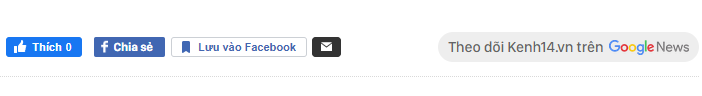

Pogba trở lại và ghi bà n đưa MU và o Tứ kết Europa League
TUẤN HOÀNG,
06:28 19/03/2021
Sự có mặt của Pogba láºp tức tạo nên tác Ä‘á»™ng rõ rệt và giúp MU hạ AC Milan với tá»· số tối thiểu 1-0 ngay trên sân khách ở tráºn lượt vá» vòng 1/8 Europa League.
- 7 ngà y quan trá»ng cho tham vá»ng của MU
- MU trở lại ngôi nhì bảng sau khi vất vả hạ West Ham
- Để chiến thắng, MU cần thêm nhiá»u Bruno và Diallo

Rạng sáng 19/3, Manchester United vất vả hạ AC Milan với tá»· số tối thiểu 1-0 ngay trên đất Italy trong tráºn lượt vá» vòng 16 Ä‘á»™i Europa League để tiến và o Tứ kết với tổng tá»· số chung cuộc 2-1

Paul Pogba chÃnh là người hùng của MU tráºn nà y khi tiá»n vệ người Pháp chỉ cần và i phút sau khi và o sân trong hiệp hai để tạo nên khác biệt

Bà n thua trên sân nhà trong tráºn lượt đi buộc MU phải dâng cao từ đầu để tìm kiếm bà n thắng. Mặc dù váºy, những đường tấn công của MU tá» ra khá đơn giản và dễ đoán khi bóng đều phải qua chân Bruno Fernandes

Cũng chÃnh tiá»n vệ người Bồ Đà o Nha được trao cơ hội ngon ăn đầu tiên trong tráºn đấu ở phút 12 sau một nỗ lực đi bóng của Luke Shaw nhưng lại dứt điểm vá»t xà trước vạch 16m50

Trong khi MU thi đấu má» nhạt, AC Milan mới là đội mở ra những cơ hội tốt nhất trong 45 phút đầu tiên. Phút 41, Alexis Saelemaekers tung ra cú nã đại bác tầm xa trong tư thế khá thoải mái không ai theo kèm. Rất may cho MU khi thủ môn Dean Henderson đã thi đấu táºp trung

Sự đơn điệu của MU ở 1/3 cuối sân buộc HLV Solskjaer phải có sự thay đổi vá» nhân sự. Ngay đầu hiệp hai, Pogba được tung và o sân để thay thế cho Marcus Rashford, người vẫn đang váºt lộn với chấn thương mắt cá. Sự thay đổi nà y cũng chÃnh là bước ngoặt cho tráºn đấu

Phút 47, MU thực hiện pha phối hợp trong vòng cấm AC Milan. Bóng đến chân Daniel James nhưng cú sút của cầu thủ nà y bị háºu vệ bên phÃa Milan ngăn cản. Quả bóng văng ra và Fred lại sút há»ng ăn nhưng tiá»n vệ của MU đã tắc bóng ngay trong chân Kessie. á» cự ly chưa đến 5 m, Pogba sút tung nóc lưới thủ môn Donnarumma đem vá» bà n thắng quý giá cho MU

Tình thế đảo ngược khi đoà n quân của HLV Stefano Pioli giỠđây phải bằng má»i giá tìm kiếm bà n thắng. Zlatan Ibrahimovic, chân sút vừa trở lại sau chấn thương được tung và o sân ở phút 65 suýt khiến Ä‘á»™i bóng cũ ân háºn với pha tì đè đánh đầu sở trường ở phút 74. Tuy nhiên, một lần nữa thủ môn Henderson lại cứu thua với phản xạ xuất thần ở cự ly gần

AC Milan gây sức ép khủng khiếp và o khoảng thá»i gian cuối tráºn nhưng đoà n quân của HLV Ole Gunnar Solskjaer vẫn có thể đứng vững và bảo toà n thà nh quả. Tháºm chà nếu may mắn hơn, Pogba đã có thể láºp cú đúp bà n thắng khi pha đánh đầu dũng mãnh của anh ở phút 88 đưa bóng đi vá»t xà trong gang tấc